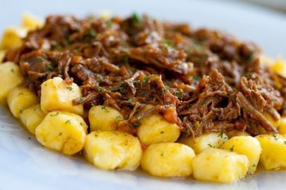

RECEITAS
VÍDEOS
INSTAGRAM

Nhoque de Mandioquinha com Ragu de Fraldinha
Ingredientes
MASSA
600 gr de mandioquinha lavada, descascada e em cubos grandes
1 colher (sopa) de manteiga sem sal (em temperatura ambiente)
1 unidade de gema de ovo
4 colheres (sopa) de parmesão ralado fino
sal e outros temperos de sua preferência a gosto
1 xícara (chá) de farinha de trigo
RAGU
2 colheres (sopa) de Óleo de canola
500 gr de fraldinha em cubos, sem gordura
1 colher (sopa) de azeite extra virgem
1/2 unidade de cebola em cubos pequenos
1 dente de alho picado
1/3 xícara (chá) de cenoura em cubos pequenos
1/3 xícara (chá) de salsão em cubos pequenos
2 latas de tomate pelado
1 folha de louro fresco
1/2 xícara (chá) de vinho tinto seco
cheiro-verde a gosto
Modo de Preparo
MASSA
Em uma panela com água e sal, cozinhe a mandioquinha até ficar macia.
Despreze a água e esprema a mandioquinha ainda quente.
Espere esfriar totalmente e junte a manteiga em temperatura ambiente, a gema e o parmesão ralado.
Tempere com sal, pimenta e noz moscada.
Junte a farinha, aos poucos, ate dar o ponto (não é necessário colocar toda a farinha).
Enrole a massa do nhoque até formar “cobrinhas” grandes e corte em cubos (1cm).
Enfarinhe os nhoques cortados.
Cozinhe em água fervente com sal até que eles subam para a superfície.
Retire-os da água, coloque em um refratário ou assadeira e regue azeite nos nhoques depois de cozidos para não grudar.
RAGU
Tempere a fraldinha com sal e pimenta.
Em uma panela de pressão, aqueça o óleo e doure a fraldinha de todos os lados.
Se necessário, corte a fraldinha ao meio, dependendo do tamanho da panela.
Deixe ficar bem dourada.
Junte a cebola, alho, cenoura, salsão e refogue.
Coloque o tomate pelado, vinho e um pouco de sal, a folha de louro e tampe.
Cozinhe na pressão por mais ou menos 40 minutos e desfie com a própria colher.
Acerte o sal e a pimenta.
Adicione salsinha e cebolinha picada quando pronto.
Para servir, coloque o ragu sobre o nhoque.
Sirva acompanhado de queijo parmesão a gosto.